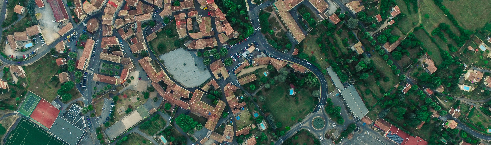

Gentrification in the City of Vancouver
GIS ANALYSIS
Our Approach
In this analysis we focus specifically on “Bad Gentrification” and negative change (which we use synonymously with “gentrification” here). We have pulled from an agglomeration of observations and research (which are touched upon in the primer) to inform our own definition of gentrification and identify which factors are important to explore:
Our Definitions
Gentrification is a process that that causes higher than normal negative change in an area over a short period of time. It has the side effects of causing demographic change, displacing the original resident population, and decreasing the social diversity of the area.
Negative Change is defined as a change that hinders the upward social mobility of any particular population. In this study we define negative change in relation to our chosen factors which are used to indicate the displacement of vulnerable populations in an area.
Social Mobility is the movement of individuals on the social ladder of their society, this movement can be downward or upward.
UnsplashAbstract & Objectives
Using 4 different factors that are indicative of negative change, a multi-criteria analysis was conducted to explore gentrification in the City of Vancouver. This analysis had two main objectives:
- Accurately identify patterns in gentrification over time using our model (validated through qualitative research/observations and any patterns that arise from our analysis)
- Identify which areas in the City of Vancouver are experiencing high amounts of negative change in the recent years
Our results show that there is a pattern of negative change in the city when looking at gentrification on a temporal scale of 5 year periods from 2006-2011 and 2011-2016. Six neighborhoods (Downtown Vancouver, Strathcona, Grandview Woodland, Hastings Sunrise, Fairview, and Kensington Cedar Cottage) were identified as being in need of intervention.
Gentrification Factors
We identified 4 main factors whose change over time (but not necessarily their values at one instance of time) would indicate whether gentrification is taking place in a given area.
We chose to focus on the “negative” Gentrification factors (Number of low educated people in an area vs. Number of of high educated people; Minority presence vs. Majority presence, etc) as often times research on gentrification focuses mainly on the incoming, displacing population rather than the displaced who are most vulnerable. As Peter Marcuse 7 writes, “there is next to nothing published on the experiences of non-gentrifying groups living in the neighbourhoods into which the much researched cosmopolitan middle classes are arriving en masse.” 8
| Gentrification Factor | Indicator Used |
|---|---|
| Affordability | Number of People spending 30% or more of their income on housing costs (Normalized by population) |
| Income | Low Income Population Prevalence (%) |
| Education | Low Educated Population defined as education attained that is below a bachelor’s degree (Normalized by total population over 15 years of age) |
| Minorities | Minority population presence in an area (including people of Aboriginal Identity as defined by Census Canada) (Normalized by Total Population) |
Affordability
Changes in Affordability are one of the main indicators of displacement. Gentrification is often paired with an increase in property values due to the forces of supply and demand (whether gentrification occurs because of this or is the cause of the increase is still debated). As the neighbourhood becomes more popular, limited housing supply causes housing prices to shoot up and therefore become unaffordable for many of the original residents (especially those who are renting)9.
Income
Changes in income reflect demographic/diversity changes and can also help predict which areas are likely to become gentrified. Some studies have defined gentrification in such a way that, only those areas which are initially classified as low income can become gentrified. Due to the poor understanding of what specific mechanisms gentrification works through, our analysis focuses on all negative change occuring in a city, regardless of where it occurs. A change in the number of people classified as low income from high to low, can be an indicator of displacement, especially if this change occurs over a short period of time 10.
Education
Education data can reveal information about the population that other factors such as income do not provide much insight into, such as a person’s earning potential (a student is likely not earning much while in school but their income after graduation usually increases dramatically and their level of education can be used to predict their future income). In this study, the assumption was made that income increases with education levels. While there are many examples of people whose income does not reflect this assumption, we consider these cases as anomalies. A change in a populations education levels from low to high would be an indicator of gentrification as those with higher earning potential/current earnings have the economic power to displace populations with lower earning potential 11.
Minorities
Minority populations are valuable contributors to a city’s diversity. One of the main advantages cities offer over life in the suburbs are the opportunities for knowledge mobilization and dissemination that densely populated areas naturally facilitate. While studies have inconclusively shown that diversity can sometimes increase in gentrifying areas, it is probable that this is due to an overall increase in a city’s demographic diversity and it has generally been observed that gentrified areas become more homogeneous in composition over time. 12